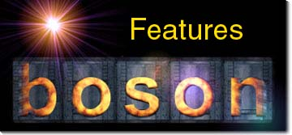

|
|
The main features of Boson are:
|
- A server controls the game, clients connect to it. Server and client(s) can run on the same computer.
- It uses the KDE libraries and will be KDE aware (menu, config).
- The graphics for the grounds, units, facilities and others are themeable.
- The sounds are themeable.
- Synchronous communication, while not real-time (ever tried to do RT over TCP/IP ?).
- Big terrain, presently already 200x200 sprites.
|
|
|
Boson requires the following Hardware / Software:
|
- Any Unix on which KDE/Qt is running.
- KDE 1.0 libraries or greater, see KDE site.
- Qt 1.42 (Qt 2.0 isn't supported yet), see Troll Tech site.
- A minimum resolution of 800 x 600 pixels.
- A 16-bit deep screen (High Color) is probably better.
- Network connection (local or internet).
|